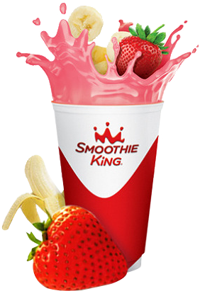

SMOOTHIE KING
고객 여러분 안녕하십니까? 스무디킹 코리아㈜ 대표이사 최성재 입니다. 스무디킹 코리아㈜는 글로벌 No.1 오리지널 스무디 ‘스무디킹’을 2003년 2월 한국에 최초로 선보인 스무디 전문 기업입니다. 스무디는 맛과 영양이 모두 담겨있는 현대인의 건강필수품으로, 개인의 건강상태를 고려해 과일만으로는 부족한 영양소를 간편하게 선택해 섭취할 수 있습니다.기존 획일화된 건강음료와의 차별화로 한국뿐만 아니라 전세계에서 사랑을 받고 있습니다. 스무디킹 코리아㈜는 국내 유일한 스무디 브랜드로 한국 스무디 시장을 개척해 이끌어 왔습니다.
독자적인 R&D 기술력을 바탕으로 최고 품종의 과일과 영양파우더를 사용해 고객이 원하는 다양한 메뉴의 스무디를 선보이며 건강음료의 트렌드를 선도하고 있습니다. 2016년 1월 신세계푸드의 자회사로 편입된 스무디킹 코리아㈜는 스무디킹의 장점과 신세계푸드의 노하우를 결합해 베이커리, 주스 등 다양한 메뉴를 선보이고,국내 최대 유통기업인 신세계그룹의 판매채널을 활용해 플래그십 매장 등 새로운 플랫폼을 구축하며 가맹점주와 함께 성장하는 상생 프랜차이즈의 대표 모델로 성장해 나가겠습니다.
